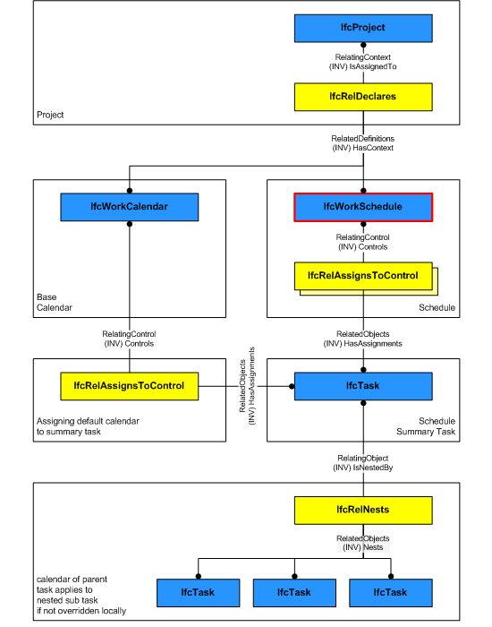

5.3.3.11 IfcWorkSchedule
| Tache unitaire de travail |
| Arbeitsprogramm |
An IfcWorkSchedule
represents a task schedule of a work plan, which in turn
can contain a set of schedules for different purposes.
HISTORY New entity in IFC2.0.
Declaration Use Definition
IfcWorkSchedule can reference a project (the
single IfcProject instance) via
IfcRelDeclares.
Figure 110 shows the backbone structure of a work schedule
that defines (1) a context through IfcRelDeclares
(not necessarily the project) and (2) controls tasks
(typically the schedule summary task) and resources. Please
note that a work calendar shall be assigned to the summary
task and not the work schedule.
 |
Figure 110 — Work schedule relationships |
Common Use Definitions
The following concepts are inherited at supertypes:
 Instance diagram
Instance diagram
Property Sets for Objects
The Property Sets for Objects concept applies to this entity as shown in Table 19.
|
|
Table 19 — IfcWorkSchedule Property Sets for Objects |
Object Documentation
The Object Documentation concept applies to this entity.
The documents of the
IfcWorkSchedule can be referenced by the
IfcRelAssociatesDocuments relationship.
Control Assignment
The Control Assignment concept applies to this entity.
An IfcWorkSchedule controls a set of tasks and
resources defined through IfcRelAssignsToControl.
Additionally, through the IfcWorkControl abstract
supertype, the actors creating the schedule can be
specified and schedule time information such as start time,
finish time, and total float of the schedule can also be
specified.
Object Nesting
The Object Nesting concept applies to this entity.
A work schedule can include other work schedules as sub-items
through IfcRelNests relationship.
Object Aggregation
The Object Aggregation concept applies to this entity.
A work schedule can include other work schedules as sub-items.
If not included in another work schedule it might be a part of a work plan
(IfcWorkPlan) defined through IfcRelAggregates relationship.
XSD Specification:
<xs:element name="IfcWorkSchedule" type="ifc:IfcWorkSchedule" substitutionGroup="ifc:IfcWorkControl" nillable="true"/>
<xs:complexType name="IfcWorkSchedule">
<xs:complexContent>
<xs:extension base="ifc:IfcWorkControl">
<xs:attribute name="PredefinedType" type="ifc:IfcWorkScheduleTypeEnum" use="optional"/>
</xs:extension>
</xs:complexContent>
</xs:complexType>
EXPRESS Specification:
|
|
| CorrectPredefinedType | : | NOT(EXISTS(PredefinedType)) OR (PredefinedType <> IfcWorkScheduleTypeEnum.USERDEFINED) OR
((PredefinedType = IfcWorkScheduleTypeEnum.USERDEFINED) AND EXISTS(SELF\IfcObject.ObjectType)); |
|
EXPRESS-G diagram
Attribute Definitions:
| PredefinedType | : |
Identifies the predefined types of a work schedule from which
the type required may be set.
|
Formal Propositions:
| CorrectPredefinedType | : | The attribute ObjectType must be asserted when the value of the IfcWorkScheduleTypeEnum is set to USERDEFINED. |
Inheritance Graph:
 Link to this page
Link to this page